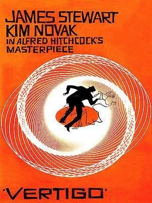
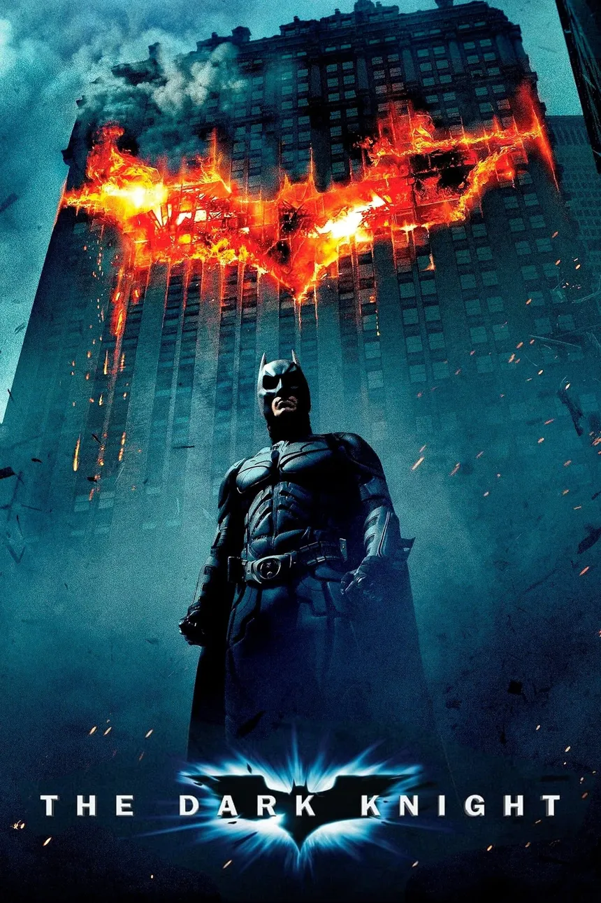
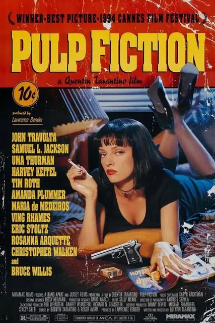

Really great movie. It not only revolved around solving the case, but the protagonist came over his fear of "vertigo".
Nolan most profoundly and amazingly portrayed Christian Bale as the Batman and also did not fail to show the craziness of Joker through Heath Ledger.
Pulp Fiction is that wild, quotable ride where every scene feels iconic no matter how many times you watch it.
